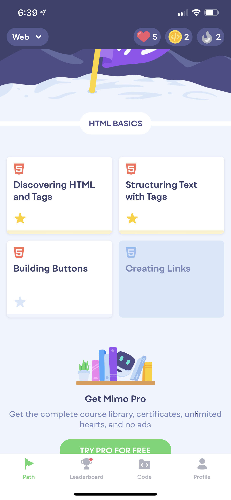

Alex Pilling
Portfolio
apilling@udel.edu
CISC275
Repository Link : https://github.com/apilling/apilling.github.io.git
Current Web Pages
- HTML and CSS Beginner Tutorial(htmldog.com):
- Dr. Bart's In Class Tutorial
To Do
Milestone 1
- Become proficient using github pages
- Re-learn basic git commands on the command line
- Read the Marksheet.io tutorials on HTML and CSS
- Complete beginner HTML Dog tutorial
- Complete beginner CSS Dog tutorial
- Complete create a basic web page from tutorial
- Start very basic Javascript
Milestone 2
- Get a basic understanding of Javascript and TypeScript by :
- Completing the HMTL Dog beginner Javascript tutorial
- Completing the HTML Dog intermediate Javascript tutorial
- Completing the Typescript Lang tutorial
- Update the "To Do" section of the portfolio to be more detailed as suggested by the TA
- Start going over the react tutorial
- Start my first Web App with React
- Put some basic Typescript functions into the web app
Milestone 3
- Complete the HTML Dog advanced Javascript tutorial
- Complete the Jest tutorial
- Complete the Jest + React Tutorial
- Experiment with more Typescript in the React web app
- Look at the bootsrap tutorial
- Time permitting start my own basic game web app. Currently thinking about trying to build Snake
Milestone 4
- Look at the UI design tutorial
- Finish the snake game started the previous week
- Make a quiz web page about a favorite tv show
- Hopefully, with enough time, create one more undecided web page
Progression Log
Milestone 1
- Watched a very useful video that helped me understand how to use github pages and how to start new web pages
(Getting Started With Github Pages)
- Finished reading the MarkSheet.io HTML tutorial and applied what I had learned to my portfolio.
- Read the CSS MarkSheet.io and added some basic styling to the Portfolio.
- Downloaded mimo app and began html and css quizes. The quizes are very helpful in getting a base level understanding of HTML, CSS and JavaScript 
- Completed the beginner HTML and CSS tutorials on htmldog.com and uploaded the web page
- Watched the course capture of the in class tutorial and completed the web page that Dr. Bart showed us
Milestone 2
- Completed the HTMLDog beginner tutorial for javascript. HTML Dog JS
- This tutorial taught me basic javascript through using it in the browser console. It taught basic ideas such as variables, variable usage, basic math, and logic
with booleans. The most important thing for using variables in javascript that I got from this tutorial was using the "var" keyword to create a variable where as in
other languages you would have to specify the type of variable. The general "var" keyword is interesting. This tutorial also taught some other basic ideas such as
if/else statements, while loops, for loops, functions, objects, and arrays. As stated in the tutorial, this language can store functions in variables which
is quite different from anything I have experienced and is something I am excited to mess around with in later web pages.
- Completed the HTMLDog intermediate tutorial for javascript. HTML Dog JS>
- The first part of this tutorial was very useful in learning about how to manipulate the DOM. It gave many examples on different was to find specific elements
from the DOM using built in javascript functions. It also demonstrated how events work in javascript. This section will be very important due to most if not all
web apps being reliant on some event from the user. Additionally, it explained how JSON works and how it used to transfer information. Scope was another topic
that seems very important as it is quite different from other programing languages. The tutorial called it functional scope. The most interesting portion of scope
to me is the idea of child scope. It seems as tho you can create a function that declares a variable and create a child function inside that function that has access
to that variable. The final few sections of the tutorial were about jQuery and some of the basics of the library. Overall this tutorial seems to give the basic tools
to start writing some javascript for web pages and should be very useful in the future.
- Completed the Typescript Lang tutorial Typescript tutorial
- This tutorial gave a very basic overview of what typescript does and how it works with javascript. As the name implies, Typescipt helps javascript in a number of
different ways with types. The tutorial goes over a few of the ways Typescript improves javascripts types like getting types by inference, defining types and composing
types. What I found most interesting is the idea of Unions. Being able to enter different types into a function and recieve a different return based on the input can
allow very creative and useful functions to be made. The last thing the tutorial discusses is the structural type system that Typescript uses. This allows to
create variables with necessarily specifying a type as long as you declare it with the correct shape.
Change Log
Milestone 1
- Added some very basic styling to Portfolio (orange background, center text, etc)
- Added Change Log and Summary Sections of
- Added some basic points to summary
- Added an image of myself to portfolio
- Added a progress log to track learning
- Added a Web page section along with the first web page and its corresponding repository
- Added Dr. Barts in class tutorial web page
Milestone 2
- Updated Progress Log with HTML dog javascript beginner tutorial
- Updated Change Log and Progress Log to show milestone markers
- Completed HMTL Dog beginner and intermediate tutorials and wrote reflections about each
- Completed the Typescript lang tutorial and wrote a reflection
- Updated the To Do section to be more detailed